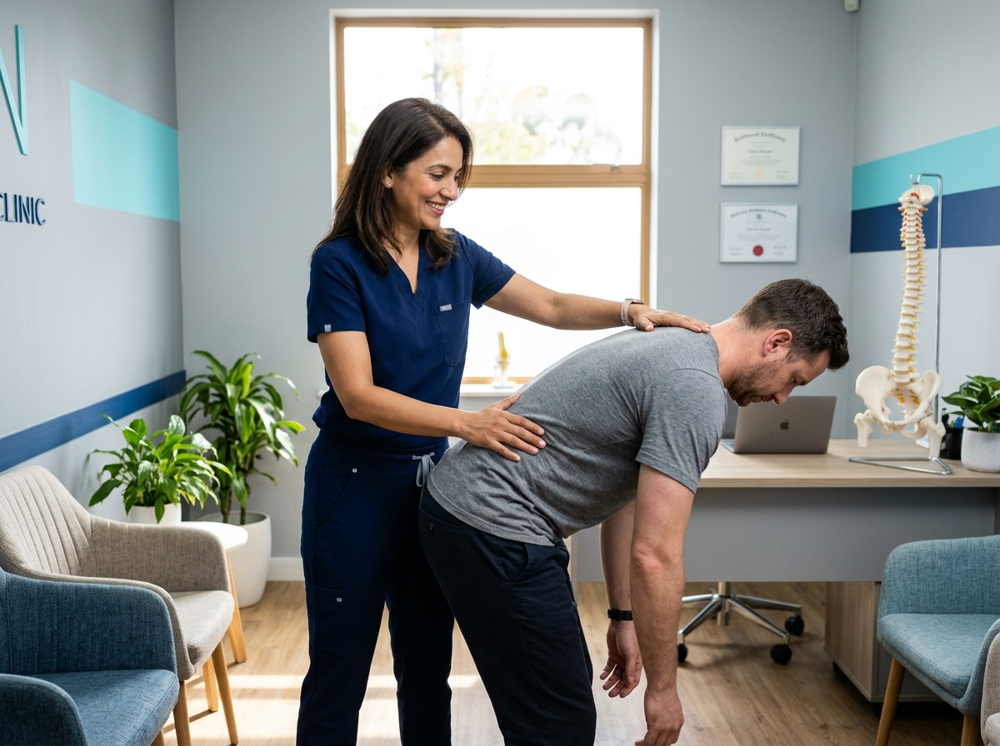
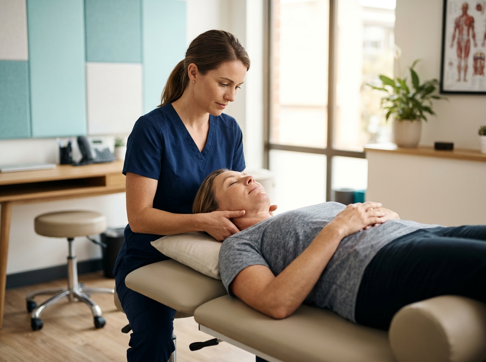
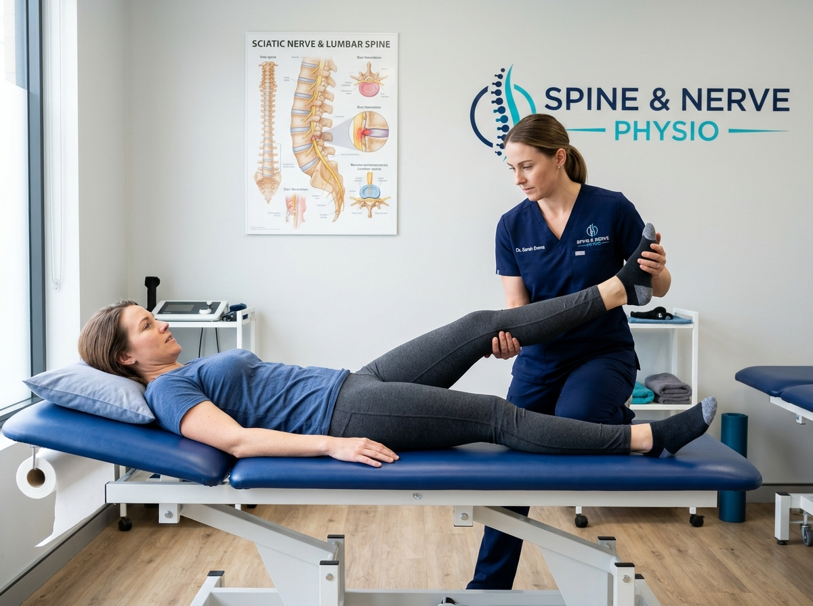
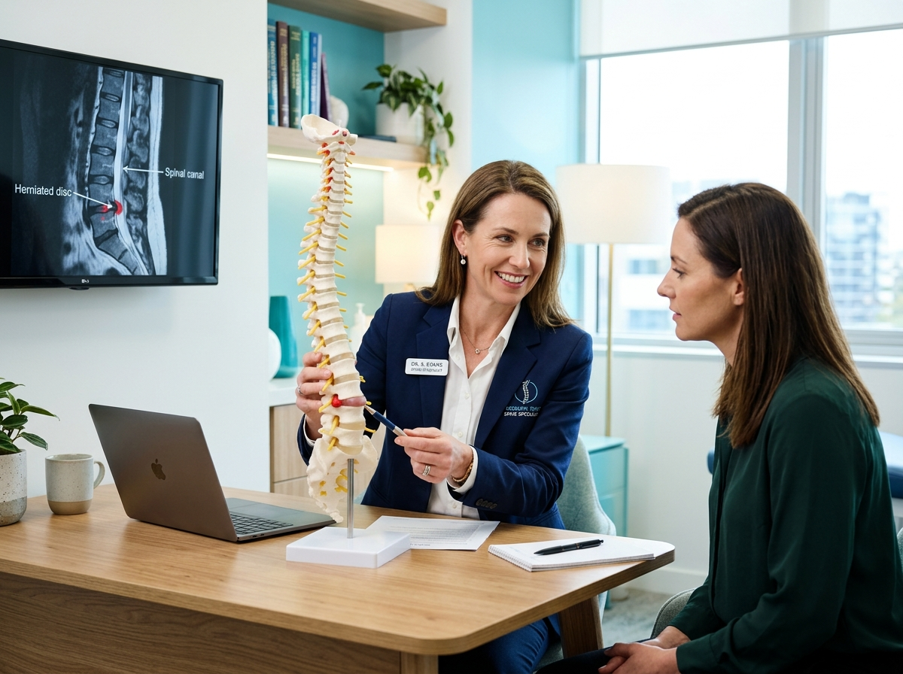
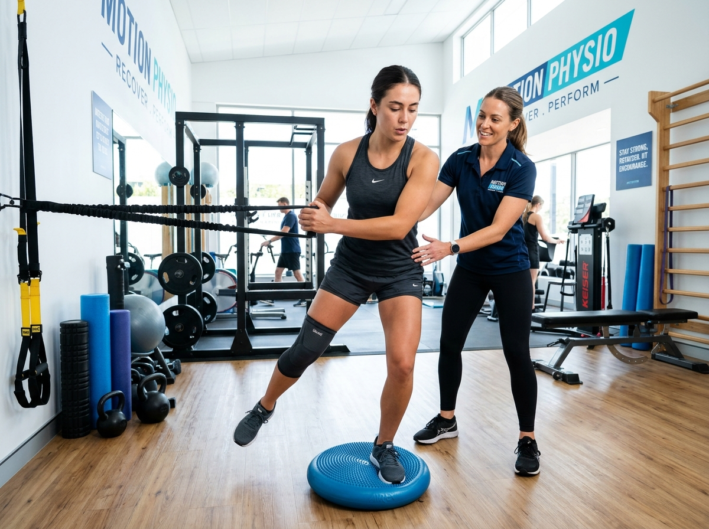
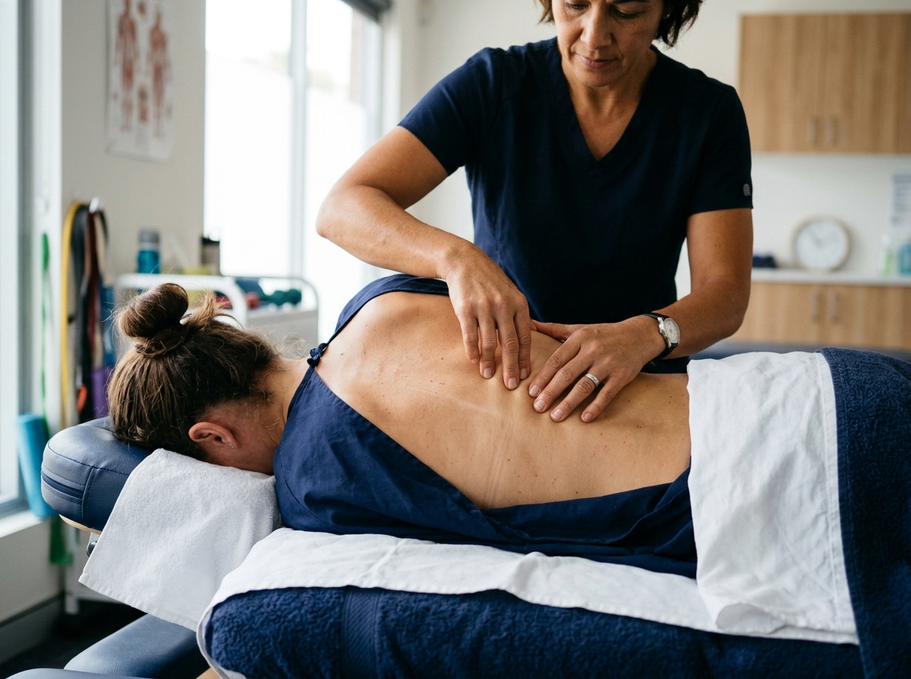
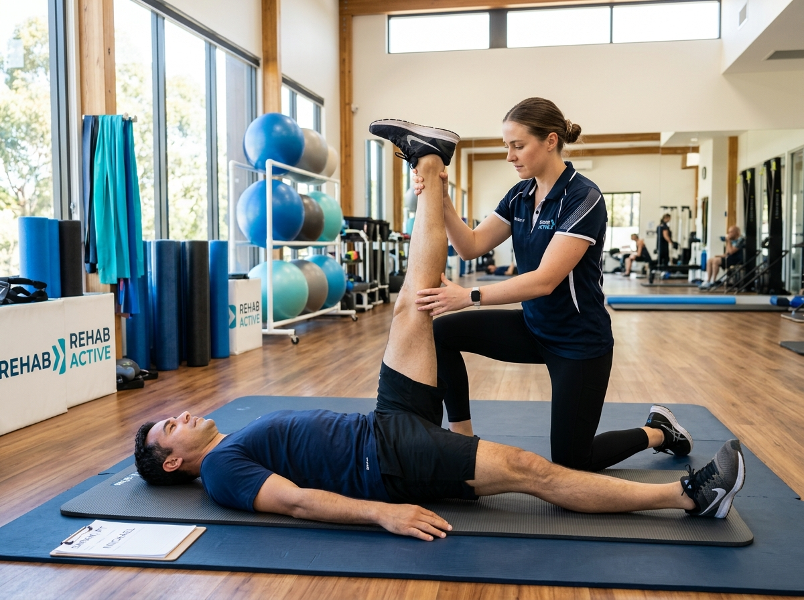

Every spine problem has a plan.
Six signature programs, one discipline behind them: assess precisely, treat non-surgically, rebuild to last.

Spine Care & Decompression
Complete spine care built around our ROBOSPINE decompression system and advance biomechanical spinal adjustment. We unload pressured discs, restore segmental motion and rebuild the muscular support that keeps your spine healthy — a comprehensive, non-surgical pathway for even long-standing problems.

Back Pain Relief
Whether your back pain arrived overnight or has shadowed you for years, treatment begins with a precise mechanical diagnosis. Hands-on osteopathic treatment, targeted decompression and graded exercise then work together to settle pain and stop the next flare-up before it starts.

Neck Pain & Cervical Care
Cervical spondylosis, tech-neck, stiffness and whiplash injuries are treated with gentle mobilisation, deep neck flexor training and posture correction — so relief holds even when you return to long hours at the desk.

Sciatica & Nerve Relief
Sciatica is your body's alarm about a compressed or irritated nerve. Our approach decompresses the nerve root, frees the tissues around it and corrects the movement fault that keeps re-irritating it — most patients feel measurable easing within the first few visits.

Slip Disc Rehabilitation
A disc bulge or herniation is not a life sentence. Our staged rehabilitation — decompression, controlled mobility, then strength — is designed around what ROBOSPINE does brilliantly for disc-bulge patients: create the conditions for the disc to settle while you rebuild a confident, capable back.

Rehabilitation & Sports Recovery
Post-surgical recovery, sports injuries and stubborn tendon or joint issues all thrive on structured rehabilitation. Gait analysis, progressive loading and osteopathic balance work help you return to full training safely and sustainably.

Migraine & Chronic Headache Care
Persistent migraines, throbbing temporal headaches, and neck-triggered pain often stem from biomechanical compressions at the C1-C2 atlas-axis junction, dural tension, and restricted cranial fluid circulation. By combining cranial osteopathy, gentle chiropractic adjustments, and FDM fascia release, Dr. Jayapal Rathod relieves neurovascular pressure at its root.

Visceral Osteopathy & Lifestyle Health
Modern lifestyle stress, prolonged sedentary hours, and chronic posture strain create severe tension in the thoracic diaphragm, mesenteric fascia, and vagus nerve pathway. Our specialized Visceral Osteopathy protocols mobilize internal organs (stomach, liver, colon), soothe sympathetic overdrive, and alleviate acid reflux, chronic bloating, IBS, and stress-related fatigue.